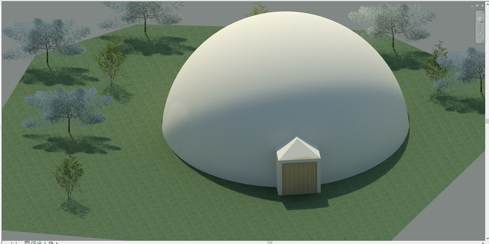
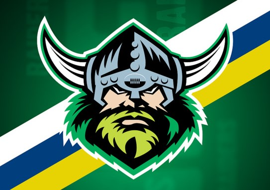

Design is a universal language. It goes beyond cultural and national barriers. It is a language all of its own, diverse and ever changing. Each designer has a unique way of presenting their creativity. It is art and engineering, construction and destruction. It gives the human spirit the chance to rise above the mundane, the visible, the problem, the barrier, the ordinary and the things that don’t work.
My schooling and life experiences have shaped my career path and determined the field of design that I would like to work in.
Having just finished Year 12, the majority of my experiences have come from school. At school I have had the opportunity to choose
subjects that have been centred around Information Technology which has always been an interest to me. This had made doing those IT
assessments easier. I would also try to incorporate those same skills into other subjects.
Back in high school I studied media which included video editing and game making. By the end of this subject I discovered my love of the process of creating a timeline and putting footage together. This is a very different skill set to what I was using in web design and was extremely helpful in the development of my interests and technique. Looking back, choosing this class was the most beneficial in my schooling years. I incorporated my multimedia skills in presenting assignments in other subjects which really made my projects stand out.
 Around this time, I gained some IT work experience at Bluepackets, an IT support company. Through this work experience I was able to put theory I had learnt into practice and see how IT was put into practice in the workforce. While it was an insightful to work in this industry, it really cemented that design is my future.
In college I undertook further studies in Design/Architecture, Robotics and Media. Through the units of Media and Architecture I expanded my understanding of design skills in programs such as Adobe’s Illustrator, InDesign, Photoshop, Animate, Premiere Pro, After Effects, Autodesk’s Revit, Maya and Unity. I created portfolio’s in Architecture, that presented my design elements and materials used to produce them. Through these projects I used Adobe InDesign (layout), text and graphic explanations to present my research. Through this process I developed my own graphic style.
As part of Digital Media Graphics unit, I created and edited video productions and undertook digital photo composition and editing. I enjoyed this unit immensely as this had been part of my interest level for a number of years. I was able to express myself creatively. In the subject of robotics, I specialised in Arduino projects, creating a battery tester that had the ability to test a car battery and creating a robot using Lego EV3 kits. I learnt the theory robot development, ethical issues and uses of robots. During this time, I learnt how to write and understand code. While robotics was not my favourite subject, it taught me creative problem-solving skills.
My life experiences have shaped how I see the world and ultimately impacted on the kind of career path that I would like to follow.
Having travelled to several countries in Asia including 3rd world countries I have seen first hand how people in the world live. It has given me an appreciation of views that come from different cultural heritages. This has sparked an interest in social justice issues and a realisation that we can create and think differently to the way societies portrayed in traditional media which is dominated by very few voices.
My value system has also been shaped by my family who have had an interest for advocating for human rights issues and change. My parents campaigned for changing a law for recognition of the unborn child. They lost a baby in a car accident and were horrified to discover that when it came to criminal law, their baby lars weren’t recognised as a human being. This led to introduction of Byrons’s Law. This has sparked a passion for social justice in me.
Having exposure to culturally and linguistically diverse friends. And friends who have been refugees, I have incorporated their experiences into my value system, some of their stories have had a profound impact on me and I have a responsibility to the world around me. As a result, I would like to use graphic design as a tool for advocating for social change and justice. As part of my career path I would love to work for a non-government organisation such as Oxfam or World Vision that are committed to making a difference to our most vulnerable people. If this does not eventuate as part of my career journey I would definitely like to be involved in some non profit design projects.
Having aspergers and having grown up with a younger brother with autism I am committed to creating user interfaces and digital tools to assist people with disabilities. iPad programs such as proloquo2go have revolutionised the way that non-verbal users can communicate. Proloquo2go is an application that uses’s visuals and text to speech as a communication solution. It provides a voice to those who cannot speak. These applications have inspired me to design solutions based on users needs.
 Looking back my IT / design career pathway began in early high school, I was introduced to a class about web design. In this class covered the basics of html (one coding language of the web). This class expanded my horizons. I was further inspired by a family member. My uncle had completed a Bachelor of Design (Honours) and works in the graphic design field. He has specialised in web page design and has created the following web pages:
Greg emphasized the importance of Human Centred Design which involves people right from the start and places them at the centre of the problem solving design process. Greg’s web pages are based on the principles of universal design – ensuring that the web pages are user friendly interface, good for the greatest number of people. I was fortunate to be able to spend time with Greg discussing and researching new technology designs and industry trends. I was also lucky enough to get given a lot of Greg’s ‘old’ technology.
One designer that has influenced my design skills to assist with using digital multimedia skills to mobilize a cause and make a difference is Vietnamese-Australian designer, Matt Huynh. His work has assisted with connecting users with more vulnerable people in our society (especially asylum seekers and refugees). The Boat is an interactive mixed media text that uses text, sound, animation, and real photos to tell a story about the plight of a teenager asylum seeker from Vietnam. The illustrations were made on rice paper to give a traditional effect. It gave the audience an immersive experience into the horrors experienced by the Vietnamese boat people, this experience made users feel as though they were part of the story. It also brought the plight of Vietnamese refugees in an innovative and moving way. His style of graphic design uses parallax scrolling to create a sense of depth and give the user to feel as if they were reading a book. (http://www.sbs.com.au/theboat/)
In the subject of Architecture, I was introduced to a design approach called Cradle to Cradle. Cradle to Cradle was developed by designers Michael Braungart and William McDonough. Conceptually, it mimics the biological cycle where the waste of one product becomes food for another part of the eco-system. It’s thinking about our products how they affect the world. This has massive implications for the design of goods and the design of manufacturing goods. This has also had a huge impact on the way I see design. It needs to incorporate ethical usage, reusability, material use. The designer has a responsibility to think about the materials utilized when designing a product. Products can be either technical (they return to the industry from which they came), biological (where they return to the environment). It’s about the effective management of scarce materials by designing materials that can be used over and over again without losing quality. Cradle to Cradle ensures that manufacturers comply with an ethical code of conduct. This means paying fair wages, providing safe working conditions for staff, compensation, fair working hours and investing in local communities. I utilised the Cradle to Cradle concept in my way finding project. I utilised the material bamboo for my concept because it’s an ecologically sustainable and a renewable material. It can be reused by being turned into flooring or mulch.
I explored front end and back end web development and built a portfolio website using HTML. During this assignment I
incorporated website design principles, such as the purpose and audience requirements, page layout, navigation and accessibility.
Through this process I looked at the work of different design teams, including Ivo Mynitten and Unfold for inspiration.
When designing for my portfolio I researched online and found a lot of creative portfolios. At the time I wasn’t able to
replicate many of them. I also didn’t like these complex sites as they had lots of things moving and interacting, I felt that
it made it hard to focus on the content and was to difficult to navigate.
One web portfolio that really stood out was Ivo Mynitten’s
(https://ivomynttinen.com/). His website wasn’t breaking the conventions of the web. His online portfolio used high quality
photographs and colour to draw the readers eyes. His website does have some reactive elements, but they are not overdone.
I came across Unfold (https://unfold.co/) when designing a logo, this team creates very clean and simple illustrations.
Their website is very simple and easy to navigate. I love their use of colours and how they create interesting logos.
The field that interested me the most during my time at school was web design/graphic design. To further develop my skills and learn the theory underpinning this field. I was accepted into a bachelor of Interaction Design at UC.
These first 4 weeks have already been very helpful in determining what career path I should take. In the first tutorial for Professional Orientation, we explored mind maps, as a group activity whereby people contributes of what design is. This helped to understand how vast and diverse design can be.
By the end of my degree I just want to be getting paid to do something that I love. Some roles I’m still exploring are UX, UI and motion/prototype designer.
To conclude I would like to be designer in the area of digital front-end solutions. I want to be a designer that is sustainability focused and designs for the needs of people.
Global connected world. [Image]. Retrieved from
https://www.khanacademy.org/computing/computer-science/internet-intro
Huynh, M. The Boat | SBS. Retrieved from
http://www.sbs.com.au/theboat/
Masefield, R. (2019). Canberra Raiders Logo/Wallpaper [Image]. Retrieved from
https://www.flickr.com/photos/masey/39328062210
Morien, C. (2019). Iot (Connected World Image) [Image]. Retrieved from
https://identity.utexas.edu/id-perspectives/connectivity-101-the-internet-of-things
Scrolling Mouse Gif. [Image]. Retrieved from
http://www.ttxoutperforms.com/img/scrolling-mouse.gif
Taylor, Z. (2007). Cradle to Cradle - Remaking the Way We Make Things [Image]. Retrieved from
https://www.flickr.com/photos/beneath_blue_skies/2090975781
W3C. Hands on Keyboard Image [Image]. Retrieved from
https://ripple.com/insights/promoting-interoperability-and-web-payment-standards-with-the-w3c/
Web Designer. [Image]. Retrieved from
https://pixabay.com/illustrations/web-web-designer-designer-html-css-2389250/
Youngson, N. (2019). Designer [Image]. Retrieved from
http://www.thebluediamondgallery.com/handwriting/d/designer.html
{kind=link}